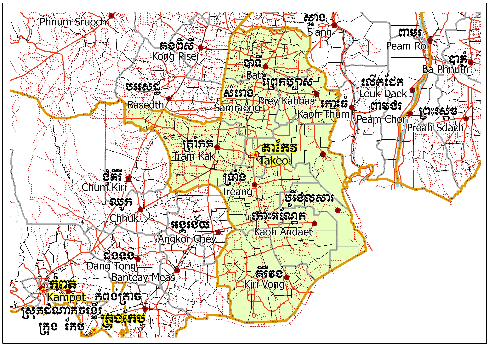

ខេត្តតាកែវ
ខេត្តតាកែវ គឺជាខេត្តមួយដែលស្ថិតនៅភាគខាងត្បូងនៃប្រទេសកម្ពុជា។ ស្ថិតនៅខាងលិចទន្លេបាសាក់ ខេត្តតាកែវ មានព្រំប្រទល់ជាប់នឹងខេត្តកំពត ខាងលិចជាប់ ខេត្តកំពង់ស្ពឺខាងជើងឆៀងខាងលិច និងខេត្តកណ្តាលនៅខាងជើងនិងខាងកើត។ ហើយព្រំប្រទល់ភាគខាងត្បូងរបស់ខេត្តគឺព្រំដែនអន្តរជាតិជាមួយវៀតណាម(ខេត្តមាត់ជ្រូក)។ ទីក្រុងខេត្តដែលទើបនឹងត្រូវបានគេស្គាល់ថាជាទីរួមខេត្តដូនកែវ (អតីតហៅថាក្រុងតាកែវ) គឺជាទីក្រុងតូចមួយមានប្រជាជនសរុប ៣៩ ១៨៦ នាក់។ ខេត្តតាកែវគឺជាស្លាកស្នាមនៃវប្បធម៌ខ្មែរ ដោយសារតែជាអតីតនគរវ្នំនិងអាណាចក្រចេនឡាស្ថិតនៅកណ្តាលតំបន់។
.jpg)
លក្ខណៈភូមិសាស្ត្រ
ខេត្តតាកែវគឺជាខេត្ដមួយស្ថិតនៅភាគខាងត្បូងនៃប្រទេសកម្ពុជា។ ខេត្តនេះមានព្រំប្រទល់ខាងលិចជាប់នឹងខេត្តកំពត ភាគពាយ័ព្យជាប់នឹងខេត្តកំពង់ស្ពឺ ខាងជើងនិងខាងកើតជាប់ខេត្តកណ្ដាល និងភាគខាងត្បូងជាប់ជាមួយព្រំដែនអន្ដរជាតិប្រទេសវៀតណាម។ ខេត្តតាកែវមានផ្ទៃដីសរុប ៣,៦៨០.១៥ គីឡូម៉ែត្កការេ[២]។ ទីរួមខេត្តនៃខេត្តតាកែវគឺក្រុងដូនកែវ ដែលជាក្រុងតូចមួយមានប្រជាជន ៣៩,១៨៦ នាក់។ បើយើងធ្វើដំណើរពីភ្នំពេញទៅកាន់ទីរួមខេត្តតាកែវលើកំណាត់ផ្លូវជាតិលេខ ២ និងលេខ៣ គេនឹងបានឃើញស្ថានភាពប្រជាពលរដ្ឋ ការប្រកបរបររកស៊ីរបស់ពួកគេនៅក្នុងខេត្តនេះ។ មិនតែប៉ុណ្ណោះ គេក៏អាចធ្វើដំណើរតាមផ្លូវជាតិលេខ២ផងដែរ ដែលមានចម្ងាយផ្លូវប្រហែល៧៨ គីឡូម៉ែត្រ។
.jpg)

រដ្ឋបាល
ខេត្តតាកែវមាន ០១ ក្រុង ០៩ ស្រុក ៩៧ ឃុំ, ៣ សង្កាត់ និង ១១២១ ភូមិ
- ស្រុកអង្គរបូរី
- ស្រុកបាទី
- ស្រុកបូរីជលសារ
- ស្រុកគិរីវង់
- ស្រុកកោះអណ្តែត
- ស្រុកព្រៃកប្បាស
- ស្រុកសំរោង
- ក្រុងដូនកែវ
- ស្រុកត្រាំកក់
- ស្រុកទ្រាំង
តំបន់ទេសចរណ៍
ភ្នំដា និងប្រាសាទភ្នំដាប្រាសាទភ្នំដាជាមានទីតាំងស្ថិតនៅភូមិព្រែកតាផ ឃុំគោកធ្លក ស្រុកអង្គរបុរី ខេត្តតាកែវ និងស្ថិតនៅខាងកើតទីរួមខេត្តតាកែវ ដែលមានចម្ងាយ ១០២គីឡូម៉ែត្រពីរាជធានីភ្នំពេញ និង២៤គីឡូម៉ែត្រពីទីរួមខេត្តតាកែវតាមផ្លូវព្រែកជីក។ ម្យ៉ាងទៀតយើងអាចធ្វើដំណើរបន្តពីប្រាសាទភ្នំជីសូរទៅទិសខាងកើតសំដៅទៅទីរួមស្រុកព្រៃកប្បាសរហូតដល់ព្រៃល្វាររួចបត់ស្តាំតាមផ្លូវកៅស៊ូទៅត្រង់រហូតដល់ភ្នំដាតែម្តង។ ប្រាសាទភ្នំដាមានភូមិសាស្រ្តលិចទឹកប្រាំមួយខែ និងគោកប្រាំមួយខែដែរ។ បច្ចុប្បន្នប្រាសាទភ្នំដាជាប្រាសាទមួយដែលមានភាពចាស់ទ្រុឌទ្រោមតាមរបៀបបុរាណដែលបានបន្សស់ទុកតាំងពីយូរណាស់មកហើយ។ ប៉ុន្តែប្រាសាទនេះជាប្រសាទមួយដែលមានភ្ញៀវទេសចរជាច្រើនតែងតែទៅចូលទស្សនាគ្រប់ពេលវេលាទាំងអស់ ព្រោះវាប្រកបដោយទាសភាពទឹកទន្លេដែលហ៊ុំព័ទ្ធនារដូវវស្សាប្រៀបបីដូចជាកោះមួយដែលស្ថិតនៅចំកណ្តាលសមុទ្រដូននោះដែរ។ ម៉្យាងវិញទៀតមានព្រៃឈើដុះព័ទ្ធជុំវិញមានពណ៌បៃតងខៀវស្រងាត់អមទៅដោយសំលេងរ៉ៃយំរន្តំនារដូវស្លឹកឈើលាស់។ មិនត្រឹមតែប៉ុណ្ណោះមានប្រជាជនដែលរស់នៅក្នុងតំបន់នោះជាពិសេសប្រជាជនដែលរស់នៅជុំវិញជើងភ្នំដានេះតែម្ដង ដែលមានភាពរួសរាយរាក់ទាក់ចំពោះបណ្ដាភ្ញៀវទេសចរ ដែលបានចូលទៅ ទស្សនាតំបន់នោះតែម្ដង[១]។ ប្រាសាទភ្នំដាមានទីតាំងស្ថិតនៅក្នុងរាជធានីនរវរនគរ និងមានឈ្មោះជាភាសាចិនណាហ្វូណា[
ភ្នំជីសូរ ស្ថិតនៅភូមិដក់ពរ ឃុំរៀង ស្រុកសំរោង ខេត្តតាកែវ។ បើធ្វើដំណើរតាមរថយន្ត ពីភ្នំពេញទៅច្រកភ្នំឌិន (ច្រកព្រុំដែនអន្ដរជាតិកម្ពុជានិងវៀតណាម) តាមផ្លូវជាតិលេខ២ កាត់តាមក្រុងតាខ្មៅ ស្រុកកណ្ដាលស្ទឹង ស្រុកបាទី និង ប្រាសាទនាងខ្មៅ មានចំងាយ ៦២ គីឡូម៉ែត្រ ដោយប្រើរយៈពេលប្រហែលមួយម៉ោង រួចបត់ឆ្វេងចូលតាមផ្លូវលំមួយមានចំងាយ៥ គីឡូម៉ែត្រ ពីផ្លូវជាតិ។ បើធ្វើដំណើរពីទីរួមខេត្តមានចំងាយ ២៧ គីឡូម៉ែត្រ។ ភ្នំជីសូរមាន កំពស់ ១៣០ ម៉ែត្រ